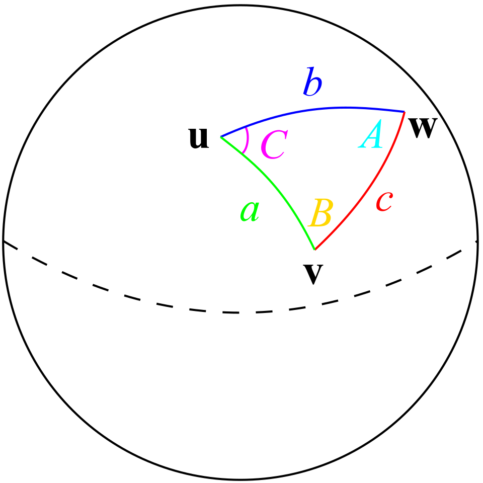

Elementary trigonometry defines sin θ and cos θ as ratios of sides in a right triangle and then quietly assumes a great deal: that angles can be measured by real numbers, that the ratios do not depend on the triangle chosen, that the functions extend to all real arguments, that they are continuous and differentiable, and that the number π which appears everywhere is well defined. A rigorous course has to reverse the order. We begin with analysis, define sine and cosine by power series (or, equivalently, as the solutions of the differential equation y″ = −y), and derive every geometric property, including the existence of π and the fact that the circle has circumference 2π, as a theorem.
Once the foundations are in place, the subject opens in several directions at once. Euler's formula eiθ = cos θ + i sin θ turns every trigonometric identity into an algebraic statement about the exponential function. The inverse functions require a careful choice of principal branches, which becomes unavoidable over the complex numbers. Plane and spherical trigonometry, the original applied core of the subject, become clean consequences of vector algebra. Chebyshev polynomials connect multiple-angle formulas to approximation theory. Fourier series reveal sine and cosine as an orthogonal basis of a Hilbert space and bring with them subtle convergence phenomena. Finally, algebraic number theory answers a very old question: for which angles can the trigonometric values be written exactly, and when are they rational?
The course assumes a first course in real analysis (uniform convergence, term-by-term differentiation of power series, the Riemann integral), basic linear algebra, and some familiarity with complex numbers. Facts from complex analysis, measure theory and Galois theory are used in a few places and are always stated precisely when they appear.
In this course, you will:
- 1.Define sin and cos by power series and by the ODE y″ = −y, and prove they agree
- 2.Define π analytically, prove periodicity, and justify radian measure as arc length
- 3.Derive all addition, multiple-angle and product-to-sum formulas from Euler's formula
- 4.Study the inverse functions, their principal branches and their complex extensions
- 5.Prove the laws of sines, cosines and tangents, and the classical triangle formulas
- 6.Develop spherical trigonometry and prove Girard's theorem on spherical excess
- 7.Study Chebyshev polynomials, their orthogonality and their extremal property
- 8.Evaluate finite trigonometric sums and products, and prove the product formula for sine
- 9.Build Fourier series, prove Dirichlet's convergence theorem and meet the Gibbs phenomenon
- 10.Use Parseval's identity to evaluate ζ(2), ζ(4) and other series
- 11.Treat hyperbolic functions as trigonometry with imaginary arguments
- 12.Decide which trigonometric values are rational, constructible or expressible in radicals
Notation: angles are in radians unless a degree sign is written. ℕ = {1, 2, 3, …}. For a complex number z, Re z and Im z are its real and imaginary parts and z̄ its conjugate. The exponential function is exp z = ∑ zⁿ/n!, which converges absolutely for every z ∈ ℂ and satisfies exp(z + w) = exp z · exp w (by the Cauchy product of absolutely convergent series).
Figures


Contents
Sine and Cosine from First Principles Lesson 2
The Definition of π and Periodicity Lesson 3
Euler's Formula and the Algebra of Identities Lesson 4
Inverse Trigonometric Functions and Principal Branches Lesson 5
Plane Triangles: the Laws of Sines, Cosines and Tangents Lesson 6
Spherical Trigonometry Lesson 7
Chebyshev Polynomials and Multiple Angles Lesson 8
Finite Sums, Products, and the Product Formula for Sine Lesson 9
Fourier Series and Pointwise Convergence Lesson 10
Parseval's Identity and the Gibbs Phenomenon Lesson 11
Hyperbolic Functions Lesson 12
Exact Values: Radicals, Constructibility and Niven's Theorem Problem Set
60 problems Assessment
Randomly generated questions
Image sources
- Figure 1 · Gibbs phenomenon 10. By Johannes Rössel. Public domain. From Wikimedia Commons: https://commons.wikimedia.org/wiki/File:Gibbs_phenomenon_10.svg
- Figure 2 · Law-of-haversines. By TheOtherJesse (SVG), Steven G. Johnson (original). Public domain. From Wikimedia Commons: https://commons.wikimedia.org/wiki/File:Law-of-haversines.svg